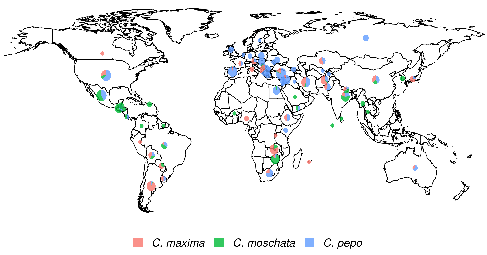
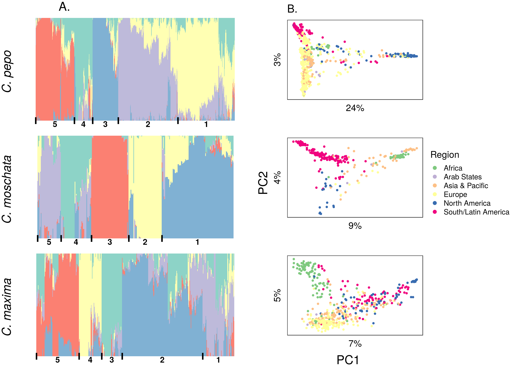

Christopher Owen Hernandez 0000-0002-1668-7121
Department of Plant Breeding and Genetics, Cornell University, Ithaca, NY
Jack Fabrizio
Department of Plant Breeding and Genetics, Cornell University, Ithaca, NY
Joanne Labate
USDA, Geneva, NY
Zhangjun Fei 0000-0001-9684-1450
Boyce Thompson Institute for Plant Research, Ithaca, NY
Michael Mazourek 0000-0002-2285-7692
Department of Plant Breeding and Genetics, Cornell University, Ithaca,NY
Abstract
The Cucurbita genus is home to a number of economically and culturally important species. We present the analysis of genotyping-by-sequencing data generated from sequencing the USDA germplasm collections of Cucurbita pepo, Cucurbita moschata, and Cucurbita maxima. These collections include a mixture of wild, landrace, and cultivated specimens from all over the world. Roughly 4,000 - 40,000 quality SNPs were called in each of the collections, which ranged in size from 314 to 829 accessions. Genomic analyses were conducted to characterize the diversity in each of the species and revealed extensive structure corresponding to a combination of geographical origin and morphotype/market class. GWAS was conducted for each data set using both historical and contemporary data, and signals were detected for several traits, including the bush gene (Bu) in C. pepo. These data represent the largest collection of sequence Cucurbita and can be used to direct the maintenance of genetic diversity, develop breeding resources, and to help prioritize whole-genome re-sequencing for further GWAS and other genomics studies aimed at understanding the phenotypic and genetic diversity present in Cucurbita.
Introduction
The Cucurbitaceae (Cucurbit) family is home to a number of vining species
mostly cultivated for their fruits. This diverse and economically important
family includes cucumber (Cucumis sativa), melon (Cucumis melo),
watermelon (Citrullus lanatus), and squash (Cucurbita ssp.)
[1]. Like other cucurbits, squash exhibit
diversity in growth habit, fruit morphology, metabolite content, disease
resistance, and have a nuanced domestication story
[2,3].
The genomes of Cucurbita ssp. are
small (roughly 500 Mb), but result from complex interactions between ancient
genomes brought together through an allopolyploidization event
[4]. These factors make squash an excellent model for
understanding the biology of genomes, fruit development, and domestication.
Within Cucurbita, five species are recognized as domesticated.
Three of these are broadlycultivated: Cucurbita maxima, Cucurbita moschata,
and Cucurbita pepo[1].
Few genomic resources have been
available for working with these species; although, draft genomes and
annotations, along with web-based tools and other genomics data are
emerging [5]. Already, these resources have been used to
elucidate the genetics of fruit quality, growth habit, disease resistance, and
to increase the efficiency of cucurbit improvement
[6,7,8,9,10,11]; however, there has yet to be a
comprehensive survey of the genetic diversity in large diverse Cucurbita
germplasm panels, such as those maintained by the USDA within the Germplasm
Resources Information Network (GRIN) system.
Germplasm collections play a vital role in maintaining and preserving
genetic variation. These collections can be mined by breeders for valuable
alleles and can also be used by geneticists and biologists
for mapping studies [12]. Like many other orphan and
specialty crops,there has been little effort put into developing community genetic
resources for squash and other cucurbits.
The Cucurbit Coordinated Agricultural Project (CucCap project) was established
to help close the knowledge gap in Cucurbits. This collaborative project aims to
provide genomics resources and tools that can aid in both applied breeding and basic
research. The genetic and phenotypic diversity present in the USDA watermelon and cucumber
collections has already been explored as part of the CucCap project, partially
through the sequencing of USDA germplasm collections and development of core collections for
whole-genome sequencing [13,14].
The diverse specimens of the USDA squash collections have yet to be well characterized at the genetic level;
although, an elaborate system has been established for classifying squash based
on species and various other characteristics.
The classification system used in squash is complex. Squash from each species can be
classed as winter or summer squash depending on whether the fruit is consumed at an
immature or mature stage, the latter is a winter squash [15].
Squash are considered ornamental if they are used for decoration, and some irregularly shaped,
inedible ornamental squash are called gourds; however, gourds include members of Cucurbita
as well as some species from Lagenaria—not all gourds are squash
[16]. Many squash are known as pumpkins;
the pumpkin designation is aculture dependent colloquialism that can refer to jack O’ lantern types,
squash used for desserts or, in some Latin American countries, to eating squash from C. moschata
known locally as Calabaza [1]. Cultivars deemed as pumpkins can be
found in all widely cultivated squash species. Unlike the previous groupings, morophotypes/market
classes are defined within species.For example, a Zucchini is reliably a member of C. pepo and a
Buttercups are from C. maxima. Adding to the complexity of their classification, the Cucurbita
species are believed to have arisen from independent domestication events and the
relationships between cultivated and wild species remains poorly understood [17].
C. pepo is the most economically important of the Cucurbita species
and is split into two different subspecies: C. pepo subsp. pepo
and C. pepo subsp. ovifera[10]. Evidence points
to Mexico as the center of origin for pepo and southwest/central United States
as the origin of ovifera. The progenitor of ovifera is considered by some
to be subsp. ovifera var. texana, whereas subsp. fraterna
is a candidate progenitor for pepo[17]. Europe played a
crucial role as a secondary center of diversification for pepo, but not
ovifera[18]. Important morphoptypes of pepo
include Zucchini, Spaghetti squash, Cocozelle, Vegetable marrow, and some
ornamental pumpkins. C. pepo subsp. ovifera includes summer
squash from the Crookneck, Scallop, and Straightneck group, and winter squash
such as Delicata and Acorn [19].
The origin of C. moschata is more uncertain than C. pepo;
it is unclear whether C. moschata has a South or North American origin
[3]. Where and when domestication occurred for this species is
also unknown; however it is known that C. moschata had an India-Myanmar
secondary center of origin where the species was further diversified [4].
C. moschata plays an important role in squash breeding as it cross-fertile to
various degrees with C. pepo and C. maxima, and can thus be used as a bridge
to move genes across species [4]. Popular market classes
of C. moschata include Cheese types like Dickenson, which is widely used
for canned pumpkin products, Butternut (neck) types, Japonica, and tropical
pumpkins known as Calabaza [1].
C. maxima contains many popular winter squash including Buttercup/Kobocha
types, Kuri, Hubbard, and Banana squash [1]. This
species also sports the world’s largest fruit, the giant pumpkin whose fruit are grown for
competition and can reach well over 1000 Kg [20]. Although this
species exhibits a wide range of phenotypic diversity in terms of fruit characteristics,
it appears to be the least genetically diverse of the three species described
[17]. C. maxima is believed to have a South American origin,
and was likely domesticated near Peru, with a secondary center of
domestication in Japan/China [nee_domestication_1990; [4]].
In this study, we set out to characterize the genetic diversity present in
the USDA Cucurbita germplasm collections for C. pepo, C. moschata,
and C. maxima. We present genotyping-by-sequencing data from each of these
collections, population genomics analysis, results from genome-wide association
using historical and contemporary phenotypes, and develop a core panel for re-sequencing.
Material and Methods
Plant Materials and Genotyping
All available germplasm were requested from USDA cooperators for C. maxima (534), C. moschata (314), and C. pepo (829) respectively. Seeds were planted in 50-cell trays and two 3/4 inch punches of tissue (approximately 80-150 mg) was sampled from the first true leaf of each seedling. DNA was extracted using Omega Mag-Bind Plant DNA DS kits (M1130, Omega Bio-Tek, Norcross, GA) and quantified using Quant-iT PicoGreen dsDNA Kit (Invitrogen, Carlsbad, CA). Purified DNA was shipped to Cornell’s Genomic Diversity Facility for GBS library preparation using protocols optimized for each species. Libraries were sequenced at either 96, 192, or 384-plex on the HiSeq 2500 (Illumina Inc., USA) with single-end mode and a read length of 101 bp.
Variant Calling and Filtering
SNP calling was conducted using the TASSEL-GBS V5 pipeline [21]. Tags produced by this pipeline were aligned using the default settings of the BWA aligner [22]. Raw variants were filtered using VCFtools [23]. Before filtering SNPs, samples with a total read depth of \(\geq 2\) standard deviations below the mean of all samples were removed before further analysis. Settings for filtering SNPs were as follows, minor allele frequency (MAF) \(\geq 0.01\), missingness \(\leq 0.5\), and biallelic. Three outlier genotypes were found in an initial PCA analysis of the C. maxima data and were removed, as they were likely not C. maxima. Variants were further filtered for specific uses as described below.
Population Genomics Analysis
ADMIXTURE [24], which uses a model-based approach to infer ancestral populations (\(k\)) and admixture proportions in a given sample, was used to explore population structure in each dataset. ADMIXTURE does not model linkage disequilibrium; thus, marker sets were further filtered to obtain SNPs in approximate linkage equilibrium using the “–indep-pairwise” option in PLINK [25] with \(r^2\) set to 0.1, a window size of 50 SNPs, and a 10 SNP step size . All samples labeled as cultivars were removed from the data prior to running ADMIXTURE. Cross-validation was used to determine the best \(k\) value for each species. Briefly, ADMIXTURE was run with different \(k\) values (1-20) and the cross-validation error was reported for each \(k\). The \(k\) value with minimal cross-validation error was chosen for each species (Supplemental Figures). Ancestral populations were then assigned to cultivars using the program’s projection feature.
Principal components analysis (PCA) was used as a model-free way of determining population structure. The original filtered marker data, not the LD-pruned data used for ADMIXTURE, were converted to a dosage matrix using VCFtool’s “–012” argument. A kinship matrix \(\mathbf{K}\) was created using the dosage matrix as input to the “A.mat()” function in Sommer [26]. PCA was conducted using the R function “princomp()” with \(\mathbf{K}\) supplied as the covariance matrix.
Phylogenetic analysis was conducted in a subset of the C. pepo panel with clearly labeled subspecies information or where enough information to unambiguously assign the accession to a subspecies was present. The SNPhylo [27] pipeline was used to infer an unrooted tree using the maximum likelihood method. Default settings were used, except the minimum coverage parameter was decreased to 3 instead of 5 to account for the lower average coverage of GBS data.
Analysis of Phenotypic Data
Historical data were obtained from the USDA Germplasm Resources Information Network (GRIN; http://www.ars-grin.gov) for C. maxima, C. pepo, and C. moschata. All duplicated entries were removed for qualitative traits, where categories are mutually exclusive, leaving only samples with unique entries for analysis. Contemporary phenotypic data were collected from a subset of the C. pepo collection grown in the summer of 2018 in Ithaca, NY. Field-grown plants were phenotyped for vining bush habit at three different stages during the growing seasons to confirm bush, semi-bush or vining growth habit. Plants that had a bush habit early in the season but started to vine at the end of the season were considered semi-bush.
Genomic heritability [28] (\(h_{g}^2\)) was calculated for all phenotypes. The parameter \(h_{g}^2\) was calculated for continuous traits using the formula \(h_{g}^2 = \frac{\sigma_{g}^2}{\sigma_{g}^2 + \sigma_{e}^2}\), where \(\sigma_{g}^2\) and \(\sigma_{e}^2\) are genetic and error variances estimated from a whole-genome regression of phenotype on marker data using ASReml-R . Multi-class categorical traits were converted to one or several different binary traits depending on the number of entries in each category. For binary traits, a Logit model was fit for the binary response and the heritability was estimated as \(h_{g}^2 = \frac{\sigma_{g}^2}{\sigma_{g}^2 + \frac{\pi^2}{3}}\)[29]. In addition to heritability, the amount of phenotypic variance explained by population structure (\(R_{pop}^2\)) was calculated from a multiple linear regression of phenotype on sturcture inferred by ADMIXTURE. The R function lm was used to regress continuous phenotypes on the \(\mathbf{Q}\) matrix obtained from ADMIXTURE. The R glm function was used with “family=binomial” to regress binary traits on population structure. As there is no \(R^2\) defined for logistic models, McFadden’s psuedo \(R^2\) was used to assess the correlation between binary traits and population structure [30].
GWAS
Data were imputed prior to association analysis. LinkImpute [31], as implemented by the TASSEL [32] “LDKNNiImputatioHetV2Plugin” plugin was used for imputation with default settings. Any data still missing after this process were mean imputed. The GENESIS [doi? 10.1093/bioinformatics/btz567] R package, which can model both binary and continuous traits, was used for association. All models included the first two PCs of the marker matrix as fixed effects and modeled genotype effect (\(u\)) as a random effect distributed according to the kinship (\(\mathbf{K}\)) matrix (\(u \sim N(0, \sigma_{u}^2\mathbf{K})\)). Binary traits were modeled using the logistic regression feature in GENESIS.
Syntenty of Bu putative region in C. pepo and C. maxima
Creation of a Core Collection
Subsets representative of each panel’s genetic diversity were identified through running GenoCore [33] on each of the filtered SNP sets. A subset of the C. pepo panel and key genotypes from the other two species were combined to form a core collection for the cucurbit community. Key genotypes were chosen to represent important market classes and for variation based on variation in traits. These genotypes will be further purified through two additional rounds of selfing and then resequenced using skim-sequecing to produce whole-genome data.
Results
Genotyping
Each Cucurbita ssp. collection was genotyped using the Cornell Genotype by Sequencing (GBS) protocol. This resulted in 534 accessions for C. maxima, 314 for C. moschata, and 829 for C. pepo. Figure 1 shows the regional distribution of accessions broken down by species. C. maxima and C. moschata constitute the majority of accessions collected from Central and South America, whereas C. pepo accessions are more prevalent in North America and Europe. C. pepo had the highest number of raw SNPs (108,279) followed by C. moschata (85,345) and C. maxima (56,598). After filtering, C. pepo and C. moschata had a similar number of SNPs, around 40,000, whereas C. maxima had an order of magnitude fewer filtered SNPs (4787). This discrepancy may be an artifact of using Pst1, a rarer base-cutter previously optimized for use in C. maxima[34 ], rather than ApeK1 which was used for C.pepo and C. moschata. The number and distribution of SNPs across each chromosomes is shown in Table 1.
Figure 1: Geographical distribution of the USDA Cucurbita ssp. collection. The size of the pie chart is scaled according to the number of accessions and sector areas correspond to the proportion of the three species.
Table 1: Distribution and number of raw and filetered SNPs per chromosome for each species
Chrom.
C. pepo
C. moschata
C. maxima
Raw
Filtered
Raw
Filtered
Raw
Filtered
0
16901
5656
3748
1236
1501
419
1
9245
4155
4575
2627
4185
300
2
6160
2921
4092
2535
2101
169
3
5908
2668
3815
2393
2201
157
4
5540
2652
7868
4458
5703
382
5
4813
2254
3226
1804
3115
154
6
4555
2100
3663
2182
3035
345
7
3677
1761
3300
1784
2705
148
8
4551
2189
2692
1577
2391
191
9
4521
1995
3427
1902
2750
229
10
4366
2052
4219
2225
2297
120
11
3839
1727
5212
2962
3713
309
12
3777
1614
5329
2286
2026
162
13
4002
1879
3888
2013
2131
257
14
4275
1973
5568
3198
4317
297
15
3086
1427
3911
2358
2662
172
16
4274
1589
3407
1987
2058
302
17
3519
1657
3557
1888
2195
251
18
3568
1723
3775
2105
1826
133
19
4015
1860
3278
1716
1793
169
20
3687
1692
3795
1623
1893
133
Total
108279
47544
85345
46859
56598
4799
Population Structure and Genetic Diversity
Figure 2: Population structure results aligned vertically by species. (A) Admixture plots: each stacked barplot represents an accession colored by proportion of inferred ancestral population. Groups based on hierarchical clustering are delimited by vertical bars and labeled with numbers along the bottom. (B) Plots of the first two principle components (PC) of accessions colored by region, variation explained by PCs is labeled on each axis.
Figure 3: Ancestry coefficients projected on cultivars from each species. Results are shown grouped by market/varietal class.
Filtered SNPs were used for population structure analysis. Available geographical, phenotypic, and other metadata were retrieved from GRIN and were used to help interpret structure results. Results from model-based admixture analysis are shown in Figure 2 panel A. These data support five ancestral groups (K=5) in each of the species. Population structure was driven mostly by geography, except in C. pepo where the presence of different subspecies was responsible for some of the structure. Commonalities among structure groups are described in Table . The first two principal components (PCs) derived from principal components analysis (PCA) of the marker data are shown in Figure 2 panel B. As with the model-based analysis, PCA showed geography as a main driver of population structure with accessions being derived from Africa, the Arab States, Asia, Europe, North America, and South/Latin America. PC1 in C. pepo separates C. pepo subsp.ovifera, which have a North American Origin, from subsp. pepo.
Figure 4: Unrooted maximum likelihood tree of C. pepo subspecies inferred using wild and cultivated germplasm in the C. pepo collection.
Ancestry proportions from admixture analysis were projected onto cultivars/market types identified in the accessions, which were excluded from the initial analysis used to infer ancestral groups. Cultivars were grouped according to known market class within species to help identify patterns in ancestry among and between market classes. Key market types identified in accessions from C. pepo including Acorn, Scallop, Crook, Pumpkin (jacko’ lantern), Zuchinni, Marrow, Gem, and Spaghetti; Neck, Cheese, Japonica, and Calabaza in C. moschata; and Buttercup, Kobocha, Kuri, Hubbard, and Mammoth (show squash) in C. maxima. These groupings are shown in Figure 3. In general, members of each market class exhibit similar ancestry proportions. In C. pepo market classes from the two different subspecies had distinct ancestry patterns. For example, Acorn, Scallop and Crook market classes are all from subsp. ovifera and all of these classes had similar ancestry proportions with roughly 50% of ancestry from the wild ovifera. In contrast, market classes within pepo had a small percentage of ancestry from wild ovifera and more ancestry in common with European and Asian accessions. With C. moschata, Neck and Cheese type market classes showed very similar ancestry patterns, whereas the Japonica and Calabaza types were more distinct. Relative to the C. pepo and C. moschata, the C. maxima cultivars were less distinct from one another.
Unlike C. moschata and C. maxima, several different subspecies were present in the C. pepo collection, including some wild specimens. A group of 82 accessions with 11,065 high-quality SNPs was used for constructing an unrooted phylogenetic tree. The tree is shown in Figure 4 and recapitulates the relationships among pepo subspecies shown in previous work [17].
Analysis of Phenotypic Data
All available historical data from GRIN were compiled. Only traits with \(\geq\) 100 entries were considered for further analysis. Filtering resulted in 21 traits for C. pepo, 5 for C. moscahta and 16 for C. maxima. Traits spanned fruit and agronomic-related characteristics, as well as pest resistances. The number of records for a given trait ranged from 108 to 822, with an average of \(\sim\) 270. Fruit traits included fruit width, length, surface color and texture, and flesh color and thickness. Agronomic data included plant vigor and vining habit, and several phenotypes related to maturity. Pest-related traits included susceptibility to cucumber beetle and squash bug in C. pepo and watermelon mosaic virus (WMV) and powdery mildew (PM) in C. maxima.
of traits measured on a quantitative scale were normally distributed. Marker-based narrow-sense heritability (\(h_{G}^2\)) was calculated for each trait. Values for \(h_{G}^2\) ranged from 0.12 to close to 1. Most traits had moderate to high heritabilities (\(\geq\) 0.4). Regression of trait data on the \(\mathbf{Q}\) matrix obtained from structure analysis was used to determine the amount of phenotypic variation explained by population structure. In C. pepo, traits related to fruit morphology tended to have high correlations with population structure (\(R_{pop}^2\)). Seed weight had the highest correlation with an \(R_{pop}^2\) of 0.6. In C. moschata, maturity showed the highest correlation with population structure (\(R_{pop}^2\) of 0.52). None of the 16 traits in C. maxima had a high correlation with population structure. The only exception was plant growth habit.Traits related to pest resistance were measure in C. maxima and C. pepo and had among the lowest correlations with population structure.
Genome-wide Association
Figure 5: GWAS result for the Bush gene (Bu) in C. pepo
Genome-wide association was conducted for all traits using standard mixed-model analysis. No significant signals were detected in C. moschata. A weak signal was detected in C. maxima for fruit set on chromosome 12 and fruit ribbing on chromosome 17. Three phenotypes were significantly associated with SNPs in C. pepo: bush/vine plant architecture on chromosome 10, fruit flesh color on chromosome 5, and fruit width on chromosome 3. The bush/vine phenotype exhibited the strongest signal, and the Manhatten plot and p-value quantile-quantile plot is shown in Figure 5.
Syntenty of Bu putative region in C. pepo and C. maxima
Development of a Core Collection
A core set of accessions that covered over 99% of total genetic diversity was identified in each of the panels. Roughly 10 to 20% of the accessions were required to capture the genetic diversity in the panels (See Supplemental Figures ). This amounted to 245 accessions in C. pepo, 154 in C. moschata, and in 248 C.maxima. The core subset identified in C. pepo was augmented with accessions that represented key market classes or that had traits of interest to breeding programs. Additionally, key accessions were selected from C. maxima, C. moschata and some wild species. Together these genotypes were purified through two additional rounds of selfing and seed will serve as the basis for a Cucurbita ssp. core to be used by breeding programs and researchers for further studies.
Genetic mapping of ovary colour and quantitative trait loci for carotenoid content in the fruit of Cucurbita maxima Duchesne
Karolina Kaźmińska, Ewelina Hallmann, Anna Rusaczonek, Aleksandra Korzeniewska, Mirosław Sobczak, Joanna Filipczak, Karol Seweryn Kuczerski, Jarosław Steciuk, Monika Sitarek-Andrzejczyk, Marek Gajewski, … Grzegorz Bartoszewski
Whole-genome resequencing of Cucurbita pepo morphotypes to discover genomic variants associated with morphology and horticulturally valuable traits
Aliki Xanthopoulou, Javier Montero-Pau, Ifigeneia Mellidou, Christos Kissoudis, José Blanca, Belén Picó, Aphrodite Tsaballa, Eleni Tsaliki, Athanasios Dalakouras, Harry S Paris, … Ioannis Ganopoulos
Susan McCouch, Zahra Katy Navabi, Michael Abberton, Noelle L Anglin, Rosa Lia Barbieri, Michael Baum, Kirstin Bett, Helen Booker, Gerald L Brown, Glenn J Bryan, … Loren H Rieseberg
The USDA cucumber (Cucumis sativus L.) collection: genetic diversity, population structure, genome-wide association studies, and core collection development
Xin Wang, Kan Bao, Umesh K Reddy, Yang Bai, Sue A Hammar, Chen Jiao, Todd C Wehner, Axel O Ramírez-Madera, Yiqun Weng, Rebecca Grumet, Zhangjun Fei
Genome of ‘Charleston Gray’, the principal American watermelon cultivar, and genetic characterization of 1,365 accessions in the U.S. National Plant Germplasm System watermelon collection
Shan Wu, Xin Wang, Umesh Reddy, Honghe Sun, Kan Bao, Lei Gao, Linyong Mao, Takshay Patel, Carlos Ortiz, Venkata L Abburi, … Zhangjun Fei
Italian horticultural and culinary records of summer squash ( <i>Cucurbita pepo</i> , Cucurbitaceae) and emergence of the zucchini in 19th-century Milan
PLINK: A Tool Set for Whole-Genome Association and Population-Based Linkage Analyses
Shaun Purcell, Benjamin Neale, Kathe Todd-Brown, Lori Thomas, Manuel AR Ferreira, David Bender, Julian Maller, Pamela Sklar, Paul IW de Bakker, Mark J Daly, Pak C Sham
 0000-0002-1668-7121
0000-0002-1668-7121